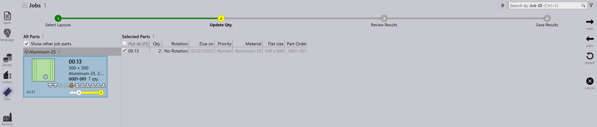
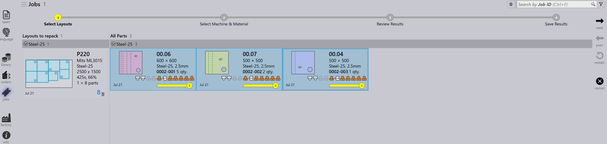

Layout-Panel
Dieser Abschnitt erläutert layoutbezogene Aktionen wie An Maschine schicken…, Von Maschine zurückrufen…, Ausgänge exportieren, Als abgeschlossen markieren…, Teile hinzufügen…, Anpassen/kompakt…, Layouts trennen… und andere Optionen zur Verwaltung von Layout-Instanzen.

|
|


An Maschine schicken…
-
Wenn eine Verschachtelung fertig ist (gefüllt oder dringend benötigt), können Sie sie an die Maschine senden.
-
Klicken Sie mit der rechten Maustaste auf die Verschachtelung und wählen Sie An Maschine schicken….
-
Ein Ordner wird automatisch erstellt, benannt nach der Verschachtelung.
-
Ausgabedateien (fxlyt, NC, Bericht, CSV) werden zum Auftrags- Ausgabespeicherort exportiert.
-
An Maschine gesendete Verschachtelungen werden mit einem blauen Häkchen angezeigt.

| Sobald sie freigegeben sind, werden diese Verschachtelungen nicht mehr für Umpacken erneut versucht. |
Von Maschine zurückrufen…
-
Wenn die Ausgabe eine Validierung oder Aktualisierung benötigt (z.B. weitere Teile hinzufügen):
-
Klicken Sie mit der rechten Maustaste auf das exportierte Layout.
-
Wählen Sie Von Maschine zurückrufen… aus.
-
-
Die Ausgabedateien und der Ordner (fxlyt, NC, Bericht, CSV) werden gelöscht.
-
Die Verschachtelung wird wieder bearbeitbar.
-
Sie können Änderungen vornehmen und sie erneut an die Maschine senden.

Ausgänge exportieren
-
Klicken Sie mit der rechten Maustaste auf ein beliebiges Layout (Verschachtelung), das an die Maschine gesendet wurde, und klicken Sie auf Ausgänge exportieren.

-
Die Option "Ausgaben exportieren" exportiert die NC-, Berichts- und Layout-Dateien in die jeweiligen Maschinenausgabeordner.
-
Diese Option generiert die NC-Datei mit den aktuellen Einheiteneinstellungen für das Layout neu.
| Export-Ausgaben sind nicht verfügbar für abgeschlossene Layouts und Layouts, die in der Warteschlange für Umpacken warten. |
Als abgeschlossen markieren
-
Sobald die Verschachtelung auf der Maschine verarbeitet wurde, klicken Sie mit der rechten Maustaste auf die Verschachtelung und wählen Sie Als abgeschlossen markieren… aus.
-
Sie können mehrere Verschachtelungen auswählen und gleichzeitig als abgeschlossen markieren.
-
Wenn eine Verschachtelung als abgeschlossen markiert wird:
-
Sie wird ausgegraut, an das Ende der Liste verschoben und mit einem grünen Häkchen angezeigt.
-
Das Layout wird aus der Liste der aktiven Layouts entfernt.
-
Teil- und Auftragsstatus werden aktualisiert, und verarbeitete Mengen wechseln in den abgeschlossenen Zustand.
-
Ausgabedateien für dieses Layout werden vom Maschinenausgabespeicherort entfernt, um eine doppelte Verwendung zu vermeiden.

-
Teile hinzufügen…

-
Verwenden Sie diese Option, um einem relativ schlecht gepackten Layout weitere Teile hinzuzufügen. Wie beim interaktiven Verschachteln ist dies eine assistentengesteuerte Option und kann auf einem einzelnen oder mehreren Layouts gleichzeitig verwendet werden.
-
TruSmartCAM mountet den Layout-Umpack-Assistenten im Hauptarbeitsbereich, wenn diese Option verwendet wird. Halten Sie die Taste Ctrl gedrückt und wählen Sie ein oder mehrere Teile aus, die auf dem/den Layout(s) gepackt werden sollen, und drücken Sie Weiter.

-
Die ausgewählten Teile werden im nächsten Schritt mit einer bearbeitbaren Mengenspalte angezeigt. Aktualisieren Sie bei Bedarf die Teilemengen im Feld Update Qty. Klicken Sie auf Weiter, um mit der Verschachtelung fortzufahren. Beachten Sie, dass Mengen nur erhöht, nicht verringert werden können.

-
Alle Layouts werden separat verschachtelt, und die verschachtelten Ergebnisse werden mit den neu gepackten Teilen angezeigt. Die Auswahl des Layouts zeigt alle vorhandenen Layout-Teile an. Das Ergebnis wird automatisch verworfen, wenn während des Umpackens kein neues Teil platziert wird. Ein Layout mit mehreren Kopien kann nach dem Umpacken zu unterschiedlichen Mustern führen.

Anpassen/kompakt…
-
Dieser assistentenbasierte Befehl kann verwendet werden, um ein Layout von einer Maschine auf eine andere anzupassen, wenn die ursprüngliche Maschine ausgefallen ist oder wenn die Maschinen- Arbeitslast ausgeglichen werden muss.

-
Er kann verwendet werden, wenn das geplante Blech nicht vorrrätig ist und das Layout auf einem anderen verfügbaren Blech neu geplant werden muss.
-
Sie können Layouts, die auf kleineren Blechen gepackt sind, auf größeren Blechen zusammenführen, um Material effizienter zu nutzen.
-
Sie können Layouts, die auf größeren Blechen gepackt sind, in kleinere Bleche aufteilen, wenn große Blechbestände nicht verfügbar sind.
-
Sie können die Packungseffizienz mehrerer Layouts (auch von verschiedenen Maschinen) verbessern, indem Sie sie zusammenführen.
-
Um es zu verwenden, wählen Sie ein oder mehrere Layouts aus und klicken Sie auf Anpassen/kompakt…, um den Assistenten im Arbeitsbereich zu öffnen.

-
Der linke Bereich zeigt alle ausgewählten Layouts und der Teile-Bereich zeigt die Layout- Teile.

-
Wählen Sie die Zielmaschine und das Blechmaterial aus und klicken Sie dann auf Weiter, um die Neuverschachtelung durchzuführen.
-
Die neuen Verschachtelungsergebnisse werden im Ergebnisbereich angezeigt.

-
Klicken Sie auf Weiter, um das angepasste oder komprimierte Layout zu speichern.

Ein Layout aufteilen
Die Option Layouts trennen… ermöglicht es Ihnen, ein vorhandenes Layout in mehrere Layouts aufzuteilen, indem Sie Mengen ändern, ohne Werkzeuge oder Verschachtelung neu erstellen zu müssen.
Diese Funktion ist besonders nützlich in den folgenden Szenarien:
-
Wenn Sie einen Teil der Gesamtmenge sofort produzieren müssen, während die verbleibende Menge für die spätere Produktion geplant wird.
-
Wenn Produktionsanforderungen auf mehrere Schichten oder Tage verteilt werden müssen, um Workflow und Ressourcennutzung zu optimieren.
-
Wenn eine bestimmte Maschine vorübergehend nicht verfügbar oder belegt ist und Sie das Layout anpassen müssen, um die aktuellen Produktionseinschränkungen zu berücksichtigen.
Um ein Layout aufzuteilen, führen Sie die folgenden Schritte aus:
-
Wählen Sie in der Layouts-Ansicht das erforderliche Layout aus.

-
Klicken Sie auf Layouts trennen….

-
Geben Sie den erforderlichen Wert in Neue Kopien ein.

-
Klicken Sie auf OK.

Das ausgewählte Layout ist jetzt in zwei Layouts mit angepassten Mengen aufgeteilt.